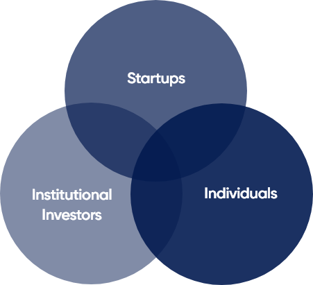
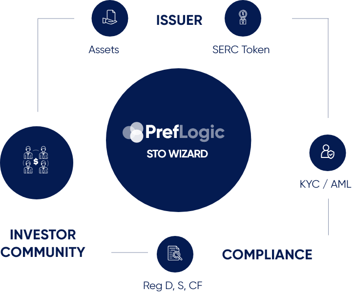

PrefLogic STO Wizard
Powered by the SERC Token Framework
Gateway for anyone to launch an STO at a low cost.
Reg S, D & CF compliance is embedded in SERC token.
Smart contract architecture adapts to changing industry standards while defining them.
PrefLogic opens up a new market where any individual or enterprise is empowered to become a security token issuer.
Market Opportunity
STOs are the Future
$325T+
in assets to be tokenized
$13b
In proven distribution power
- Potential liquidity available to $250T+ worth of global real estate assets
- Blockchain & smart contracts are proven as the next step of advancement in the financial marketplace
- STOs marry the best of ICOs with regulation, consumer protection & real-world economic drivers
The Power of Blockchain Distribution Meets Regulation
With new levels of security & accessibility, all assets have the potential to be traded on Blockchain ledgers.
STOs serve not only traditional issuers...

...but unserved market of 20M+ individuals in search of capital
Tokenize Any Asset
Real Estate
Fine Art
Intellectual Property
- Issue or invest in a fraction of any proven asset
- Greater access to investors fuels potential liquidity
- Tokens are bought & sold with the familiarity of stocks or crypto exchange
Proof Of Concept
- $320+ trillion in wealth is stored in real estate.
- Our first company-driven STOs will target US-based real estate ventures as proofs of concept.
POC1:
Announcing Soon!
POC2:
Announcing Soon!
PrefLogic will drive potential liquidity for trillions of dollars in assets.
Services
STO Wizard
- Token Creation
- Offering creation & registration
- Issuer dashboard
SERC Token
- 30+ smart contracts embedded in token
- Automates regulatory compliance
- Reg D, S & CF
$10k+ Per User
*upfront & annually as applicable
SaaS Suite Empowers Regulatory Compliance
KYC / AML
Cap Table
Token Holder Notifications
Individuals Become Issuers
STOs Empower Small Capital Formation
By lowering cost and technology barriers to entry, ANY individual has the potential to run an STO for themselves.
As each new issuer funds their STO marketing campaign, new KYC-verified investors are added to the PrefLogic ecosystem.

In dollars raised, the next five years will make the first wave of ICOs look like kid’s stuf [...] These ofspring of ICOs, Security Token Offerings (STOs), will become ubiquitous in venture capital and financial services more generally.- Alex Tapscott, Blockchain Revolution
Road Map
-
Q4 2018
KYC System
Issuer Facilitation Portal -
Q1 2019
Token Holder Notifications
-
Q2 2019
Reg A+ On-Chain Offerings
-
Q2 2019
Issuer DApp
-
Q2 2019
Token Holder Voting
-
Q3 2019
Additional Issuer Tools
The Team
Chris Corica
CEO & President
A successful NY banker who dislikes centralized banking, Chris Corica currently acts as a Community-to-Management liaison for a Top 50 market cap Crypto. Chris is the CEO and Founder of Queen City Funding, Inc. where he focuses on development in the City of Buffalo. He’s also a real-estate consultant for a reputable US hedge fund.
Mike Brennan
COO
Mike is a versatile software developer and entrepreneur that has worked for one of the largest high-tech retail companies in the world as a senior software engineer. Mike holds an M.B.A. and has 15+ years of experience in the tech space. He enjoys understanding complex systems and solving hard technical problems. He is passionate about building large scale data systems and cares about high-quality work as well as getting things done.
Todd Wier
Founder
Todd is a business development professional with experience in technology and finance. Recently his duties included management of a privately owned Asset Fund. Previously Todd founded and served as CEO of TEK21, who developed web based applications for several major brands: MGM, Capitol Records & Budweiser, etc.
Bob Stockdale
CTO
Bob has 11 years of experience designing, developing and implementing software systems ranging from critical business systems and massive data migration projects to highly available e-commerce websites. Since 2016 he led the development and rollout of a new website platform for the largest subsidiary of the largest online retailer in the world. Bob is a polyglot engineer with expertise in Elixir, Java, JavaScript, Solidity, and Perl, with a passion for security and driving innovation.
Lance Woodson
CIO
Lance began mining Bitcoin in 2012, and now uses his network automation experience to maintain an Ethereum mining data center. He previously advised an IoT research facility for Lockheed Martin, built data centers with Cisco Systems and taught service provider routing with Juniper Networks.
Kyle Anderson
Full Stack Developer
Kyle has worked on a wide range of projects in his 8 years of development. His passion for solving the problem at hand has led him from pouring through vendor COBOL code to developing blazing fast asynchronous APIs to enable new business ventures. While recent work has focused on provisioning scalable cloud infrastructure, in his role as a senior software engineer he is frequently touching all layers of the stack to ensure the applications in his purview are running at their best and meeting the needs of his clients.
Jeff Till
Back-End Developer
Jeff is a dedicated backend developer with a focus on ETL and big data processes. He has 15 years experience building enterprise data systems, and currently works as a Data Architect at a large company whose goal is to write “Software that works to help government work better.” Jeff is a talented, passionate programmer who enjoys competing in programming challenges. He has worked on personal projects in the fields of business intelligence and artificial intelligence.

Greg Yannuzzi
Front-End Developer
Greg has 20 years of experience in Software Engineering with a focus on Web development. He enjoys new challenges and has taken on projects ranging in size from enterprise, military and government systems, to interactive marketing kiosks, and commercial web systems for storage rental and management. His focus is on providing flawless and intuitive user experiences across all mediums.
Q&A
-
A platform solution acting as a gateway to ANYONE who wishes to tokenize or offer fractional ownership of ANYTHING with future earning power or value. A token can represent your stake or a sliver of ownership in an asset.
-
A Security Token is a digital asset whose value is tied to real-world economic drivers, similar to traditional equities and structured to comply with US securities laws.
-
A utility token provides users access to a product or service on the blockchain. Utility tokens are not designed as investments although many people buy them in hopes that they will increase in value as the demand for the companies goods or services will increase. A decision on the legality and regulatory adherence has yet to be finalized but comments by regulators indicate most are illegal securities. A Security Token is asset or investment backed and can provide a variety of benefits to the holder. These benefits may include equity, ownership, profit sharing, dividends, and voting rights, all executed via a smart contract.
-
PrefLogic’s mission is to embed regulatory requirements into the code that makes up a token, then harness the power of the ICO distribution method so that issuers can legally offer fractionalized ownership of anything, direct to the investor, on a global basis.
-
Preferred stocks, also known as preferred shares, are securities that are considered “hybrid” instruments with both equity and fixed income characteristics. They normally carry no shareholders voting rights, but usually pay a fixed dividend.
-
Securities that represent part ownership in a company and generally carry voting privileges. Common shareholders may be paid dividends, but only after preferred shareholders are paid.
-
The objectives of KYC guidelines is to prevent banks from being used, intentionally or unintentionally, by criminal elements for money laundering activities. Related procedures also enable banks to better understand their customers and their financial dealings. This helps them manage their risks prudently.